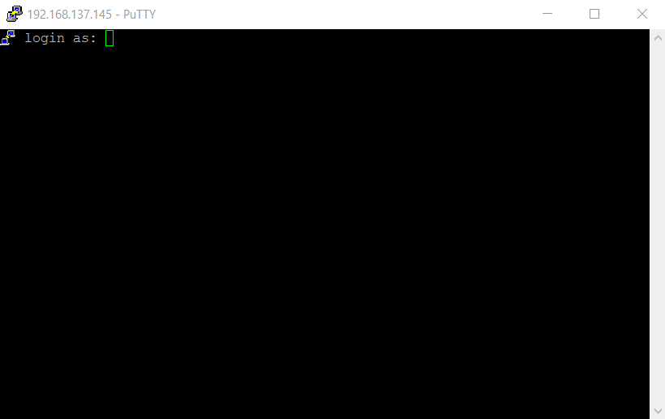

Chapter 3 How to build a sensor
3.1 Getting started with Pi
Step 1: Install the OS of Pi on your SD card
Plug in your SD card on your laptop and open the Raspberry OS imager and
formatyour SD card.

Write the Raspberry Pi OS on your SD card. Please enable
sshand set username (pi) and password (raspberry) in the setting before the writing.

Step 2: Connect the Pi on your laptop
This enables your laptop to access and control your Pi via a network cable. We don’t need to buy and use a screen, keyboard and mouse that can be attached to the Pi.
Plug in your SD card on the Pi and connect the Pi on your laptop via a Ethernet cable.

Enable
internet connection sharing optionon your WiFI adapter.

Find and remember the
IP address of your Pi. 1) Press the window key button; 2) type incmd, 3) type inarp -a, 4) search the IP address of Raspberry Pi by looking the first 6 characters of physical addressMAC Address Lookup: MAC addresses of the all devices of Raspberry Pi Foundation start with
B8:27:EB:xx:xx:xxorDC:A6:32:xx:xx:xx.
Access your Pi by Putty by typing the IP address in the host name.

Log in your Pi with the default setting (ID: pi, password: raspberry). Type
ping 8.8.8.8to see if your Pi can use the Internet.

Step 3: Set up your Pi
Update your Pi and packages:
sudo apt-get update -y && sudo apt-get upgrade -yInstall packages we use:
sudo apt-get install git python3-pip python3-dpkt python3-pcapy python3-schedule python3-picamera python3-dropbox libbluetooth-dev -ySet up the wireless setting on your phone hot spot
sudo nano /etc/wpa_supplicant/wpa_supplicant.conf- Put your mobile hot spot information (to me, juhyeon9087 for both SSID and password)
country=GB network={ ssid="juhyeon9087" psk="juhyeon9087" key_mgmt=WPA-PSK }Set up camera by turning on
interface Options-Legacy Camerasudo raspi-configSet up Dropbox on your Pi.
Get your Dropbox access key first
- Create a app in the developer site of Dropbox here
- Select access more scopes:
Move intoPermissionsand check more access
Clone this script to the Raspberry Pi
git clone https://github.com/andreafabrizi/Dropbox-Uploader.gitMove into the cloned folder:
cd Dropbox-UploaderGive the
dropbox_uploader.shscript:sudo chmod +x dropbox_uploader.shRun the
dropbox_uploader.shscript:./dropbox_uploader.shCopy and paste your
app keyandapp secretCope and paste of the terminal URL to your search engine and put your
access code
Step 4: Test and play your your Pi
Detecting WiFi packets
- Plug in a WiFi adapter on your Pi and type this:
pi@raspberrypi:~ $ iwconfig lo no wireless extensions. eth0 no wireless extensions. wlan0 IEEE 802.11 ESSID:off/any Mode:Managed Access Point: Not-Associated Retry short limit:7 RTS thr:off Fragment thr:off Power Management:on wlan1 IEEE 802.11 ESSID:off/any Mode:Managed Access Point: Not-Associated Tx-Power=20 dBm Retry short long limit:2 RTS thr:off Fragment thr:off Power Management:off- You will see
wlan1, which you couldn’t see before plugging in.wlan0is the onboard WiFi. - Install the
aircrack-ngtool
sudo apt-get install -y aircrack-ng- Put the
wlan1in monitoring mode
sudo airmon-ng start wlan1- With the monitoring mode adapter, execute this to scan for nearby WiFi devices
sudo airodump-ng wlan1monSensor component
Sending a file on your dropbox
- Move on the
Dropbox-Uploaderfolder (cd ..is going back to home folder)
cd Dropbox-Uploader- Get the list of Dropbox file list
root@raspberrypi:/home/pi/Dropbox-Uploader# ./dropbox_uploader.sh list > Listing "/"... DONE [D] External Drive.dbx-external-drive- Upload one file on your Dropbox
root@raspberrypi:/home/pi/Dropbox-Uploader# ./dropbox_uploader.sh upload README.md / > Uploading "/home/pi/Dropbox-Uploader/README.md" to "/README.md"... DONE- Recheck the uploaded file on your Dropbox
root@raspberrypi:/home/pi/Dropbox-Uploader# ./dropbox_uploader.sh list > Listing "/"... DONE [D] External Drive.dbx-external-drive [F] 9373 README.md- Move on the
Detecting Bluetooth packets
- Clone a simple Bluetooth packet collector
git clone https://github.com/MS3FGX/Bluelog.git- Move on the folder
cd Bluelogmakeand run the code by typing./bluelog -vmfn
Take a shot by Pi camera
- Check the attached camera
vcgencmd get_camera supported=1 detected=1- Enter the command:
raspistill -o test.jpg
Step 5: Make our Pi as a sensor
File Name. - Move the